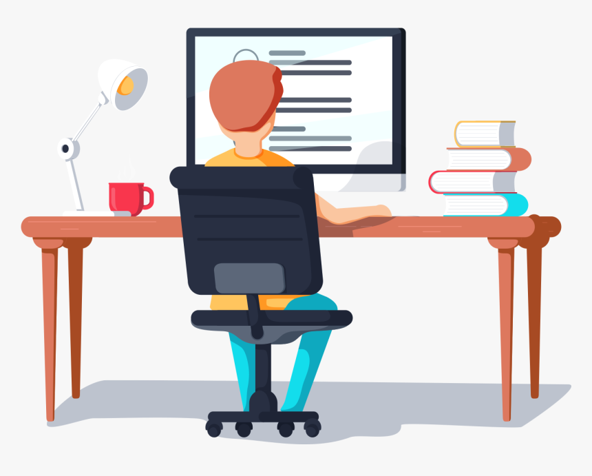

Jermania
A Rookie's Journey to Web Development
Chapter 2 - The CSS version

Chapter 2 - The CSS version
Hi, Jerm here, again - thanks for sticking around (bizarre, but I shan't complain, really). This time, I'm playing around with CSS and adding various styles to my site. My journey to web development continues...

The goal remains the same: to learn various coding languages and develop my skills as a web developer, so that I can build my own sites, apps and programs - and eventually try to take over the world! (yep, that's still happening folks...).
Well, it's going... so far, it's been interesting - sometimes frustrating when I can't remember little things, so I find myself often having to go back to older lessons or searching the internet for help (MDN Web Docs and W3 Schools have become my new best mates lately). But hey, you never stop learning, right? That's what this is about - learning...
...and discipline. I still do work in the steel industry - busy with a few projects currently (bills need to be paid, right?) - so finding/making the time for this new quest requires a great deal of discipline and focus. Still a work-in-progress story, that...
Tell me about your journey - hopefully not too many obstacles, potholes, Audi-drivers, and bumps along the way!
CONTACT ME